今天先做哪一件
打开学海，先看到的不是功能，是今天：到期的知识点、待复盘的错题、今天已练的题，全在同一屏。最上面只放一个主行动，做完这一件再谈别的。没有任务时，它给一条最轻的题，不是一片空白。

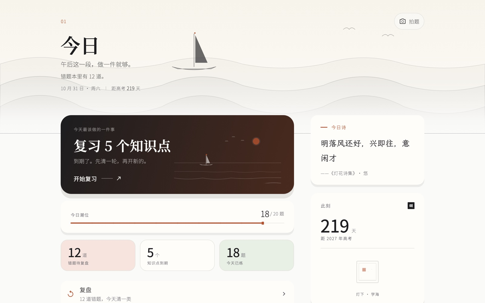
从哪开始，不用自己猜
练习页把入口收成几条：专项刷、试卷刷、交叉混练，其余收着不占版面。开始做题时按掌握度配难度，做完立即判分，错题自动进错题本。题库 76,794 题，qid 全库唯一，同一道题不会被算两次。

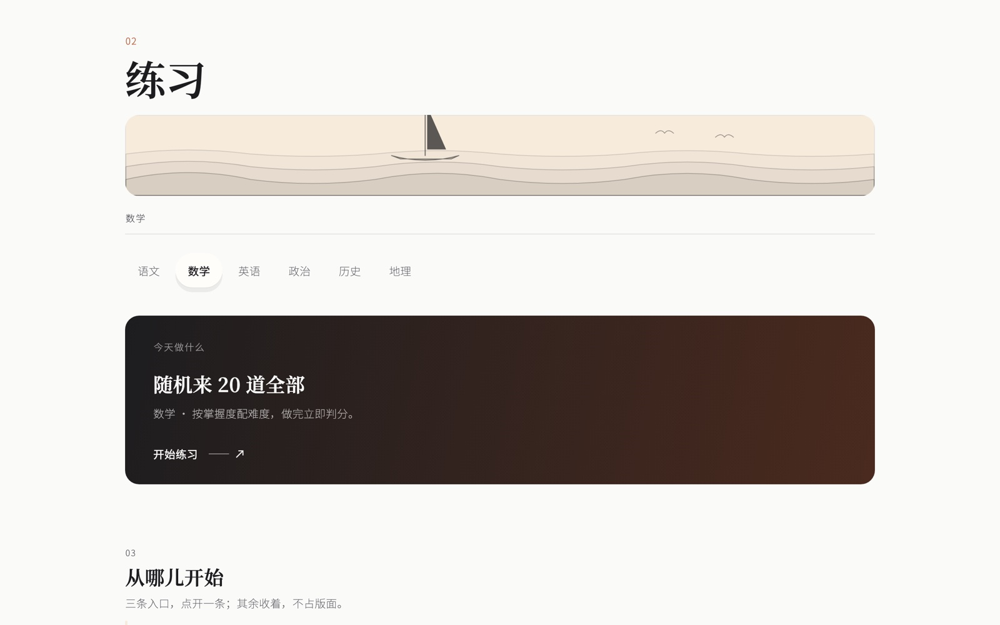
复盘先给结论，再给分布
复盘的材料，是你答过的每一道题。作答页对主观题不猜对错：写完提交评析，判不出就标待判定。复盘页再给三条结论——最集中的错因、错题最多的学科、还有多少道待重做。待重做按错次排序，点一行直接去复习。

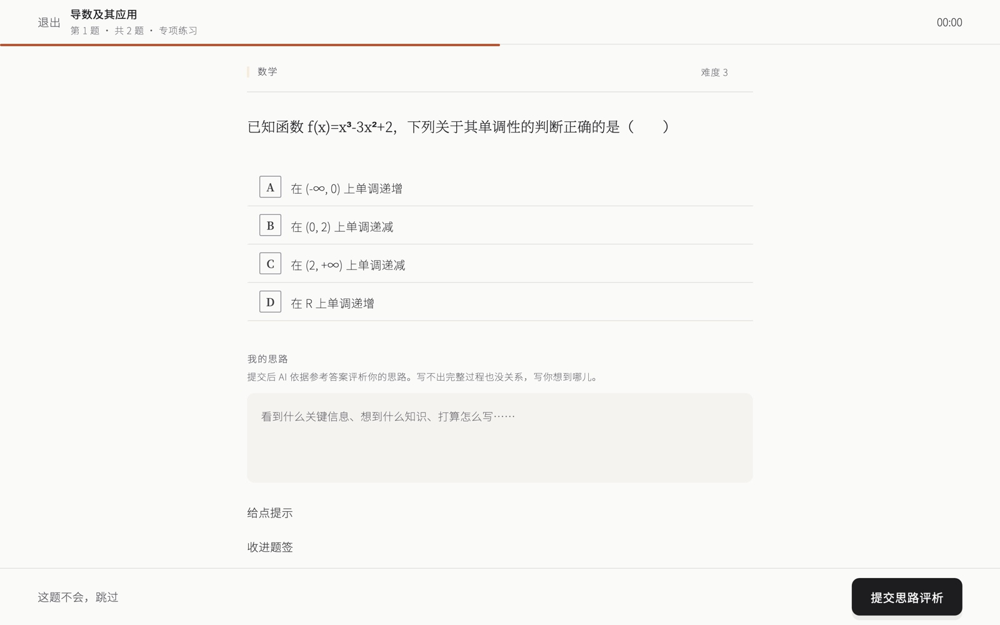
只记你做过的事
成长页只记结果，不给评价：本周练了几题、积分累计到多少、段位进度、签到与连续天数。数据不够时它会直说这一页还没得看，而不是补一张漂亮的空图。学习记录可以导出成 JSONL，留在自己手里。

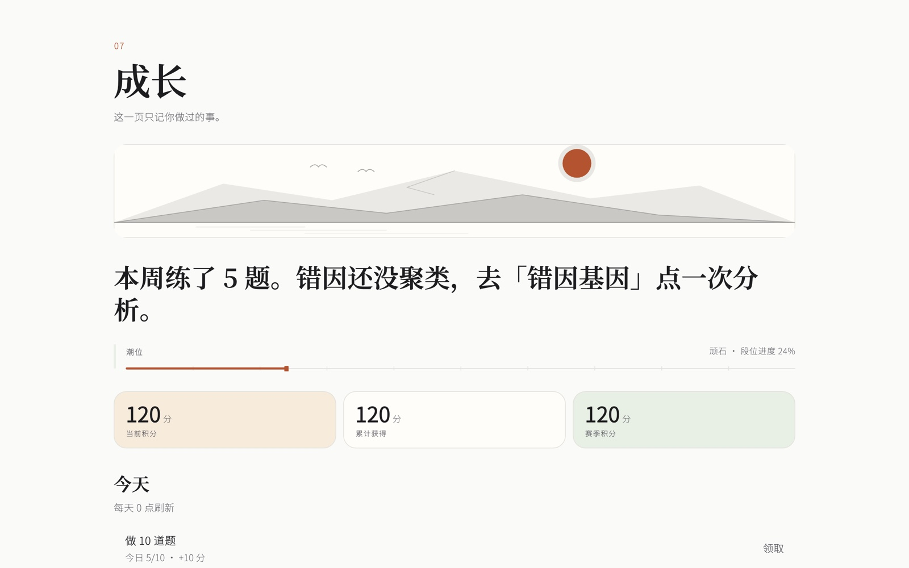
解锁记录、里程碑与复盘
成就页分三栏：勋章、里程碑、复盘。勋章分常驻与赛季轮换，已解锁多少写得清楚；里程碑由你自己立目标，进度用现有统计实时算。没解锁的不会假装近在眼前。

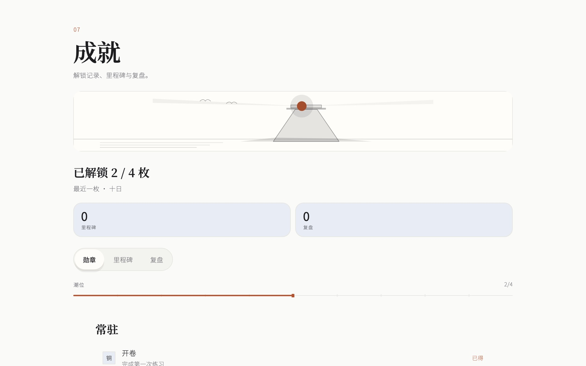
单词按真题频次排
英语从词书开始：单词按高考真题出现频次排序，已学、在读、未开始分开看。跟读测评要先下载一次语音模型，之后全离线。阅读、完形与写作分开练，不混在一张卷子里。

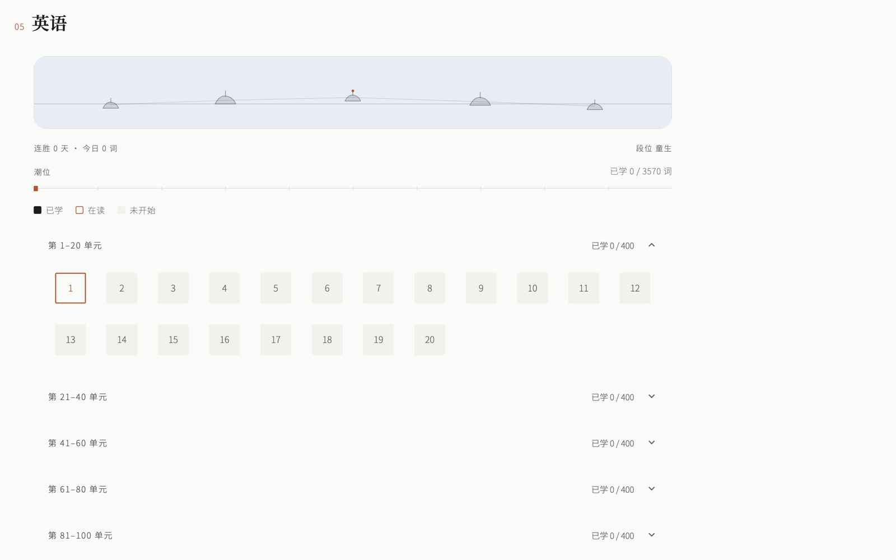
先听，再对原文
听力挂在英语之下，单独成一页：一套题配一段录音，可以整套播放，也可以只听一道。听完展开原文与答案核对。题库里的听力题要先配好音频才会出现——没音频的题它直接说没取到，不拿别的题凑。

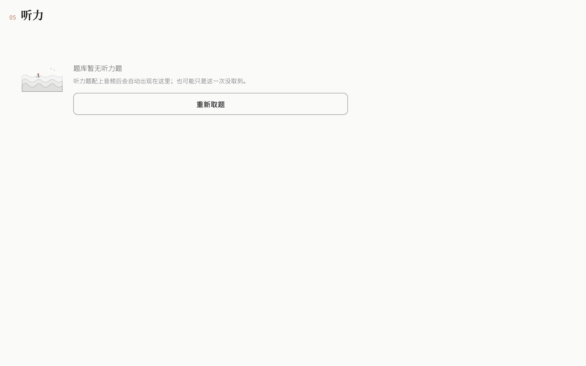
章节按题数排，掌握自己标
知识页把六科拆成章节，按题数排序；先选一科，再看哪几章题最多。掌握度是自评四档——掌握、了解但不熟、不会、不确定——系统不替学生猜。答错后可以让 AI 讲解知识点，卡片会沉淀回这一页。

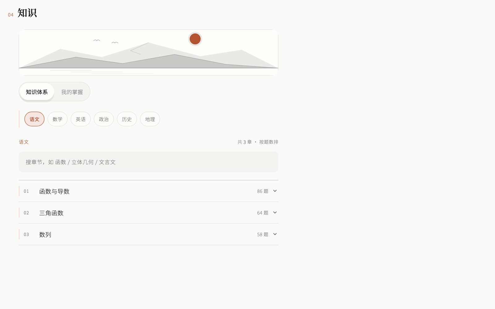
还差的两件
题库解析缺 12,619 条，解析完整率 62.5%；3.0 目前只出 macOS，Windows / 安卓 / iOS 停在 2.6.0。拍照搜题走云端 OCR，不是端侧识别；备案与资质未办，当前仅内测分发。
现在可以装
装上学海，
看完整的一整天
macOS · 97 MB · 2026-10-31 · 构建 35。装好登录，落到今日页，其余七间屋子在左侧栏。